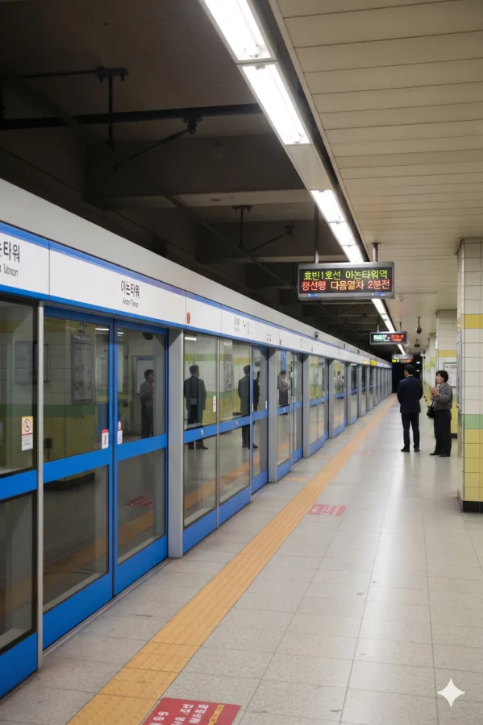

효빈 도시철도 1호선 탄성지선의 113-7번 역이다. 추후 2034년에 효빈 도시철도 청엽선이 개통되면 환승역이 될 예정이다. 효빈광역시 청엽구 청엽동 98에 소재한다. 본래 청전역(靑田역)으로 개업하였으나, 2016년 인근의 거대 랜드마크인 '아논 타워'가 건설되며 지금의 역명으로 변경되었다. 물론 지금은 타워 구경보다 애니메이션 캐릭터 이름 때문에 인증샷 남기러 오는 사람이 더 많다.
1988년 탄성지선 1차 개통과 함께 영업을 시작한 유서 깊은 역이다. 청엽구의 핵심 상업지구와 주거지구를 잇는 요충지에 위치하고 있으며, 지하 3층 규모로 건설되어 꽤 깊은 심도를 자랑한다. 역 내부 구조는 전형적인 80년대 양식이지만, 최근 들어 서브컬처 팬들의 유입으로 인해 역사 곳곳에 핑크색 분위기가 감돌고 있다. (...)
추후 청엽선이 개통되면 지하 3층에서 지상 2층 고가역사까지 이어지는 엄청난 수직 이동 동선이 예고되어 있다. 아논이 런던에서 도망쳐오다 체력을 다 썼다는 설정을 고증하기 위한 막장환승 코스다. 에스컬레이터만 타다가 늙을 지경.
1988년 개통 당시의 역명은 청엽동과 우전동의 앞 글자를 딴 청전역(靑田역)이었다. 하지만 발음상 창전역과 너무 헷갈린다는 민원이 개통 초기부터 무려 27년간 빗발쳤다. "기사님 창전 가나요?" "아니요 청전 가는데요?" "...그게 그거 아닌가요?"
그러던 중 2016년, 역 인근에 초고층 랜드마크 아논타워(亞論타워)가 착공되었다. 여기서 '아논(亞論)'은 한자로 '나를 논한다'는 뜻을 품은, 건설사 측의 심오하고 철학적인 네이밍이었다. 혼동을 유발하던 역명을 마침 바꾸자는 여론이 일었고, 청엽과 우전을 합친 '청우역'이라는 평범한 대안도 제시되었으나, "이왕 랜드마크 생기는 거 팍팍 밀어주자"는 여론과 함께 2016년 타워 착공과 동시에 아논타워역으로 역명 변경이 추진되었다.
물론 이 과정이 순탄치만은 않았다. 개명 초기에는 특정 사기업의 랜드마크 이름을 그대로 쓰는 것에 대해 특혜 논란이 꽤 거셌으며, 특히 지역 내 트러블 메이커로 꼽히는 빌런 정치인 윤재훈과 이차야 등이 앞장서서 이를 정치적 쟁점으로 만들며 강하게 반대했다. 하지만 아논타워 운영측에서 효빈교통공사에 막대한 액수의 역명 사용료(역명비)를 쾌척하며(...) 자본주의의 힘으로 논란을 1차적으로 잠재웠다. 게다가 2023년 이후 이 역이 본격적인 서브컬처 성지로 부상하자, 공사 측은 타워 측이 낸 두둑한 역명비를 바탕으로 역사 내 공식 굿즈샵 확충 및 팝업스토어 유치에 아낌없이 투자했다. 결국 쏟아지는 양질의 굿즈 혜택에 불만을 표하던 시민들 대다수도 "이 정도면 인정이지"라며 긍정적인 여론으로 돌아섰고, 끝까지 눈치 없이 억지 반대와 선동을 일삼던 윤재훈과 이차야는 역풍을 강하게 맞아 정계에서 완전히 매장당하는 최후를 맞이했다.
|
1
아논타워역 출구 정보
|
||
|---|---|---|
| 번호 | 주요 시설 및 방향 | 비고 |
| 1 | 애포초등학교, 청엽에이라아파트 | |
| 2 | 아논타워, 청엽1동 행정복지센터, 남동중학교 | |
| 3 | 우전중학교, 우전고등학교, 우전2동 행정복지센터, 아논아파트 | |
| 4 | 서승초등학교, 서승중학교, 토모아파트 | |
연도별 일평균 승하차 인원 통계다. 탄성지선 역들 중에서도 독보적인 이용객 수를 자랑하며, 특히 2023년 애니메이션 방영 이후 특정 팬층의 유입이 폭발적으로 늘어났다.
| 아논타워역 이용객 통계 | ||
|---|---|---|
| 연도 | 일평균 이용객 | 비고 |
| 2020년 | 13,116명 | |
| 2021년 | 13,426명 | |
| 2022년 | 18,578명 | |
| 2023년 | 19,720명 | |
| 2024년 | 20,232명 | |

| 청엽구청 ↑ | ||||
| 하 | ㅣ | ㅣ | 상 | |
| ↓ 우전 | ||||
| 상 | 1 효빈 도시철도 1호선 | 창선 · 중앙로 · 효빈역 방면 |
| 하 | 1 효빈 도시철도 1호선 | 승남해수욕장 방면 |
| ㅣ | ㅣ | |||
|
|
||
|
|
| 구분 | 정류소명 | 노선 번호 |
|---|---|---|
| 순방향 | 아논타워 | 17, 37, 47, 48, 70, 172, 471, 472, 481, 842, 1000 |
| 역방향 | 아논타워(건너편) | 71, 73, 74, 84, 70-1, 712, 741, 742, 841, 842, 1000R |